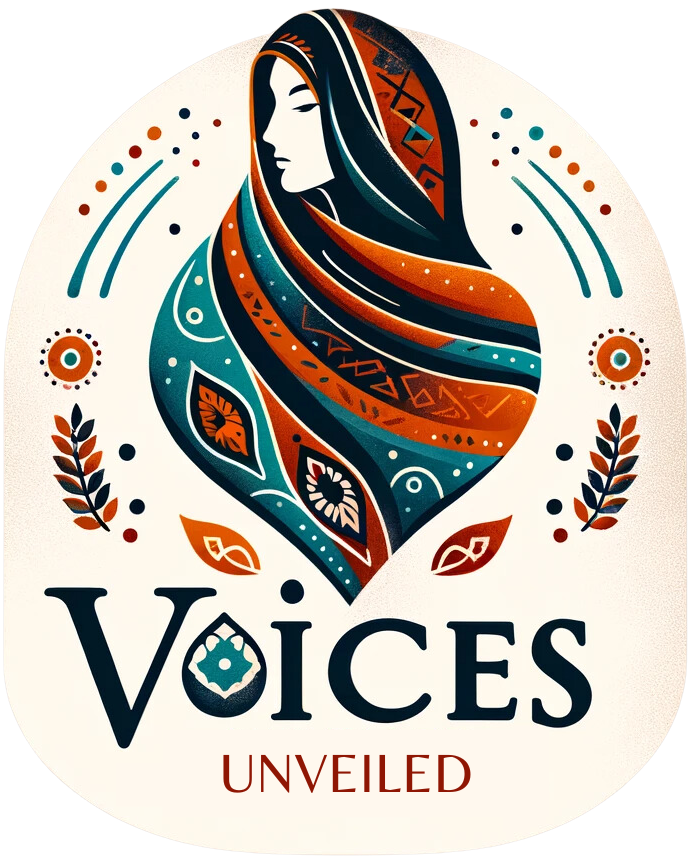

Website Redesign Proposal · Draft
A warm, dignified, and action-focused website that helps donors, volunteers, and students understand the mission, trust the organization, and take meaningful action.
The opportunity
In 2024 you provided 115 scholarships, funded internet for 50 students, and trained 20 interns — even as the withdrawal of U.S. AID narrowed the paths to education for Afghan women and girls.
Voices Unveiled is now one of the few remaining grassroots lifelines. The website should carry that weight with clarity and calm. Today's visitors meet powerful stories but a crowded path to action; we propose a site organized around a single promise — keep her learning — where every page makes the next step obvious.
This proposal builds directly on the Voice & Dignity design system already established for the brand: its colors, typography, components, and voice.
What the redesign should achieve
A clear, always-visible Donate path and an impact-based donation selector that shows exactly what each gift makes possible.
Center student agency and resilience — never trauma as spectacle — with consent-first storytelling.
Surface real impact numbers, the annual report, partners, and 501(c)(3) transparency close to every ask.
Generous space, warm color, and a focused structure that works on any device and connection speed.
WCAG AA contrast, keyboard focus, descriptive alt text, and student-safety practices built in.
A reusable component library so new pages and campaigns stay on-brand without redesign.
Proposed structure
Six clear destinations, with Donate visually distinct and always within reach.
About
Mission, team, and the why behind the work.
Programs
Education, mental health, leadership, mentorship.
Impact
Numbers, outcomes, annual report, transparency.
Stories
Consent-first student stories of resilience.
Volunteer
Share skills; help create a safe learning space.
Donate
Impact selector, monthly giving, trust signals.
How the key pages work
One promise, one clear next step.
The clearest, most reassuring ask.
Agency first, always with consent.
Proof, plainly told.
Design direction
Soft ivory ground, deep plum anchor, terracotta warmth, and hope gold used sparingly for light. Editorial serif headlines carry emotion; a clean sans keeps actions effortless.
Deep Plum
#4B2142
Terracotta
#C46A4A
Hope Gold
#E5B84B
Soft Sage
#A9B8A4
Midnight
#1F2A44
Soft Ivory
#FAF6EF
Keep her learning.
Libre Baskerville — headlines, quotes, emotional statements.
Your gift keeps education, connection, and hope alive.
Inter — navigation, forms, buttons, program copy.
Signature components
Every screen assembles from the reusable library — consistent, accessible, fast to ship.
Impact cards turn data into clear, scannable proof.
Donation selector ties each amount to a tangible outcome.
"It gave me hope and strength."
Story cards focus on resilience.
Safety note, everywhere stories appear.
Campaign banner
Help keep Voices Unveiled open.
$32,500 raised · Goal $50,000 — warm, urgent, never alarmist.
A phased plan
Align on goals, gather consented stories and photography, finalize sitemap and copy.
High-fidelity designs for the homepage, donation, story, and impact pages using the design system.
Responsive, accessible front-end with the donation flow, CMS for stories and campaigns, and analytics.
QA across devices and connection speeds, accessibility audit, soft launch, and a campaign-ready handoff.
Next step
Review this draft, mark it up, and let's shape the final scope together.
Share feedback on this draftVoices Unveiled is a registered 501(c)(3) nonprofit · voicesunveiled.org · Prepared with the Voice & Dignity design system